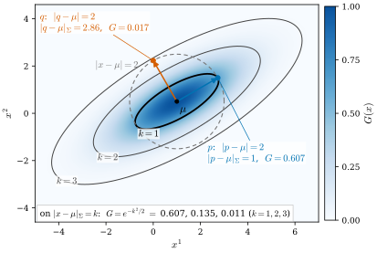
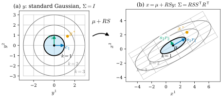
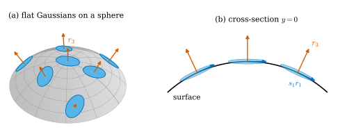
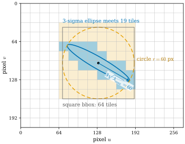

29.1 A Gaussian Is a Metric
Goals
- 3DGS의 primitive \(G(x)\)가 \(\Sigma^{-1}\)이 정하는 inner product 하나로 정해진다는 것을 설명하고, level set인 ellipsoid의 축과 반축을 \(\Sigma\)의 eigenvector와 eigenvalue로 읽을 수 있다.
- Gaussian을 표준 Gaussian의 affine image \(x = \mu + RSy\)로 보고, 좌표를 바꿀 때 \(\Sigma \mapsto A\Sigma A^{\mathsf T}\), \(\Sigma^{-1} \mapsto A^{-\mathsf T}\Sigma^{-1}A^{-1}\)으로 서로 반대로 변하는 이유를 contravariant와 covariant의 차이로 설명할 수 있다.
- 납작한 Gaussian의 가장 짧은 축이 normal 역할을 하는 이유를 PCA normal estimation과 같은 원리로 설명하고, 그 normal을 믿을 수 없는 경우를 말할 수 있다.
- 화면 위 2D covariance의 eigenvalue로 Gaussian이 차지하는 범위(3σ 반지름)와 배정되는 tile 수를 계산할 수 있다.
Prerequisites
- Section 0.3: first fundamental form의 Gram matrix와 그것이 정하는 ellipse(Definition 0.3.5, Figure 0.3.3), point cloud의 PCA normal estimation(Figure 0.3.4)
- Section 0.7: covector, pullback (0.7.2), contravariant와 covariant
- Section 0.8: Riemannian metric(Definition 0.8.1)
- linear algebra: symmetric matrix는 orthonormal eigenvector로 대각화된다(spectral theorem). 3DGS 논문 [Kerbl23]의 기본 수식
Motivation
Section 0.8에서 Riemannian metric은 tangent space마다 하나씩 주어진 inner product였고, chart에서는 symmetric positive definite matrix \((g_{ij})\)로 적혔다. 3D Gaussian Splatting(3DGS) [Kerbl23]의 장면은 수많은 3D Gaussian으로 이루어지고, Gaussian마다 \(3 \times 3\) symmetric positive definite matrix \(\Sigma\)가 하나씩 붙어 있다. 같은 종류의 행렬이 나온 것은 우연이 아니다. 이 절의 주장은 제목 그대로다. Gaussian 하나는 \(\R^3\)에 놓인 metric 하나이고, Gaussian의 값은 그 metric으로 잰 거리만으로 정해진다.
이 관점으로 세 질문에 답한다.
- \(\Sigma\)와 \(\Sigma^{-1}\) 가운데 무엇이 metric이고, 좌표를 바꾸면 각각 어떻게 변하는가? splatting은 왜 \(\Sigma^{-1}\)이 아니라 \(\Sigma\)를 투영하는가?
- 3DGS가 \(\Sigma\)를 rotation \(R\)과 scale \(s\)로 쓰는 것은 기하적으로 무엇인가?
- 납작해진 Gaussian은 왜 surface 조각처럼 행동하고, 그 normal은 무엇인가?
The 3DGS Primitive
3DGS의 장면은 Gaussian들의 모임이다. Gaussian 하나는 평균 \(\mu \in \R^3\), covariance matrix \(\Sigma\), opacity \(\alpha \in (0, 1)\), 그리고 보는 방향에 따라 바뀌는 색(Section 29.6)을 가진다. 공간의 점 \(x\)에서 Gaussian의 값은
이다 [Kerbl23]. 확률밀도와 달리 정규화 상수 \((2\pi)^{-3/2}(\det\Sigma)^{-1/2}\)가 없으므로 \(G(\mu) = 1\)이다. 렌더링에서는 \(G\)를 화면에 투영한 2D Gaussian에 opacity \(\alpha\)를 곱한 값이 그 픽셀에서의 불투명도가 된다(Section 29.3).
\(\Sigma\)는 symmetric이고 \(0\)이 아닌 모든 \(v\)에 대해 \(v^{\mathsf T}\Sigma v \gt 0\)이다. 이런 행렬을 symmetric positive definite matrix(대칭 양의 정부호 행렬)라 하고, \(3 \times 3\)인 것 전체를 \(\mathrm{SPD}(3)\)으로 쓴다. \(\Sigma\)가 SPD이면 \(\Sigma^{-1}\)도 SPD다(eigenvalue가 \(1/\lambda_i \gt 0\)). Section 29.4에서는 \(\mathrm{SPD}(3)\) 자체를 하나의 manifold로 본다.
\(\Sigma^{-1}\) Is an Inner Product
Definition 29.1.1 (the metric of a Gaussian). \(\Sigma \in \mathrm{SPD}(3)\)에 대해
로 정한 inner product를 Gaussian \((\mu, \Sigma)\)의 metric이라 부르자. \(\abs{x - \mu}_\Sigma\)를 \(\mu\)에서 \(x\)까지의 Mahalanobis distance(마할라노비스 거리)라 한다.
\(\Sigma^{-1}\)이 symmetric이므로 \(\inner{u}{v}_\Sigma\)는 symmetric bilinear이고, positive definite이므로 \(\inner{v}{v}_\Sigma \gt 0\) (\(v \ne 0\))이다. 곧 Definition 1.5.1의 inner product이고, standard basis에 대한 그 Gram matrix가 \(\Sigma^{-1}\)이다(Definition 1.5.12). 이 기호로 (29.1.1)을 다시 쓰면
\[ G(x) = \exp\!\big(-\tfrac12\abs{x - \mu}_\Sigma^2\big) \]
이다. Gaussian의 값은 Gaussian 자신의 metric으로 잰 \(\mu\)까지의 거리 하나로 정해진다. Euclidean 공간의 “반지름 \(k\)인 구”에 해당하는 것은 이 metric의 구 \(\{x : \abs{x - \mu}_\Sigma = k\}\)이고, 그 위에서 \(G = e^{-k^2/2}\)로 일정하다. 이 구를 \(k\sigma\) ellipsoid라 부르자(아래 Proposition 29.1.2).
| \(k\) | 1 | 2 | 3 |
|---|---|---|---|
| \(G = e^{-k^2/2}\) on \(\abs{x - \mu}_\Sigma = k\) | 0.607 | 0.135 | 0.011 |
모양을 읽으려면 \(\Sigma\)를 대각화한다. \(\Sigma\)는 symmetric이므로 spectral theorem에 의해 \(\Sigma = R\Lambda R^{\mathsf T}\)로 쓸 수 있다. 여기서 \(\Lambda = \diag(\lambda_1, \lambda_2, \lambda_3)\)이고 \(\lambda_i \gt 0\)이며, \(R\)의 열 \(r_1, r_2, r_3\)은 orthonormal eigenvector다. 한 열의 부호를 바꿔도 eigenvector이므로 \(\det R = 1\), 곧 \(R \in \mathrm{SO}(3)\)으로 고를 수 있다. \(\lambda_i = s_i^2\) (\(s_i \gt 0\))로 쓰면 \(\Sigma^{-1} = R\Lambda^{-1}R^{\mathsf T}\)이므로
이다. \(\inner{r_i}{v}\)는 \(v\)의 \(r_i\) 방향 성분이다. 곧 \(r_i\) 방향으로는 길이를 \(s_i\)로 나누어 잰다.
Proposition 29.1.2 (level sets are ellipsoids). \(\Sigma = R\,\diag(s_1^2, s_2^2, s_3^2)\,R^{\mathsf T}\)이면 \(k \gt 0\)에 대해 level set \(\{x : \abs{x - \mu}_\Sigma = k\}\)는 중심이 \(\mu\)이고 축이 \(r_1, r_2, r_3\)이며 반축의 길이가 \(ks_1, ks_2, ks_3\)인 ellipsoid다. 특히 \(1\sigma\) ellipsoid는 \(\Sigma\)가 정하는 metric의 unit sphere다.
Derivation. \(x - \mu = \sum_i c_i r_i\)로 쓰면 (29.1.3)에서 \(\abs{x - \mu}_\Sigma^2 = \sum_i c_i^2/s_i^2\)이다. 따라서 level set은 \(\sum_i c_i^2/(ks_i)^2 = 1\), 곧 \((r_1, r_2, r_3)\) 좌표에서 반축이 \(ks_i\)인 ellipsoid다.

Figure 29.1.1을 보자. 회색 점선 원 위의 두 점 \(p\)와 \(q\)는 \(\mu\)에서 Euclidean으로 똑같이 2만큼 떨어져 있다. 그런데 장축 방향의 \(p\)는 가장 안쪽의 검은 ellipse(\(k = 1\)) 위에 있고, 단축 방향의 \(q\)는 두 번째 ellipse(\(k = 2\))보다도 바깥에 있다. 값은 \(G(p) = 0.607\), \(G(q) \approx 0.017\)이다. Gaussian의 입장에서 \(p\)는 가깝고 \(q\)는 멀다. Gaussian이 보는 거리는 \(\Sigma^{-1}\)의 metric으로 잰 거리다.
이 그림은 Tour의 Figure 0.3.3과 같은 종류의 그림이다. 거기서는 first fundamental form의 Gram matrix \(\begin{pmatrix} E & F \\ F & G \end{pmatrix}\)가 정하는 inner product의 unit circle을 UV 평면에 그렸고, 반축의 길이가 Gram matrix의 eigenvalue \(\lambda\)에 대해 \(1/\sqrt{\lambda}\)(그림에서는 \(\varepsilon/\sqrt\lambda\))였다. 여기서는 Gram matrix가 \(\Sigma^{-1}\)이고 그 eigenvalue가 \(1/s_i^2\)이므로 반축이 \(s_i\)다. Gaussian의 \(1\sigma\) ellipse는 metric의 unit circle이다.
A Gaussian Is an Affine Image of the Standard Gaussian
\(\Sigma = R\Lambda R^{\mathsf T}\)에서 \(\Lambda = SS^{\mathsf T}\) (\(S = \diag(s)\))이므로
이다. 첫 식이 3DGS가 쓰는 식이다 [Kerbl23]. 둘째 식은 그 뜻이다. 확률의 말로는 \(y\)가 standard normal distribution(covariance \(I_3\))을 따르면 \(x = \mu + RSy\)의 covariance가 \((RS)I_3(RS)^{\mathsf T} = \Sigma\)라는 말이다. 기하의 말로는 affine map \(y \mapsto \mu + RSy\)가 반지름 \(k\)인 구 \(\abs{y} = k\)를 \(k\sigma\) ellipsoid로 보낸다는 말이다. 실제로 \(\Sigma^{-1} = RS^{-2}R^{\mathsf T}\)이므로
\[ \abs{RSy}_\Sigma^2 = y^{\mathsf T}SR^{\mathsf T}\,(RS^{-2}R^{\mathsf T})\,RSy = y^{\mathsf T}y = \abs{y}^2 \]
이다. 곧 \(RS\)는 Euclidean metric의 \(\R^3\)에서 Gaussian의 metric의 \(\R^3\)으로 가는 isometry다. 3D 그림은 시점에 따라 헷갈리므로 2D에서 같은 일을 보자.

Figure 29.1.2의 (a)에서 (b)로 따라가 보자. (a)의 정사각 격자와 동심원이 (b)에서는 \(30^\circ\) 기운 직사각 격자와 동심 ellipse가 된다. 파란 \(e_1\)은 장축 방향의 \(s_1r_1\)(길이 2)로, 초록 \(e_2\)는 단축 방향의 \(s_2r_2\)(길이 0.7)로 간다. 주황 점 \(y^*\)는 (a)에서 첫째 원과 둘째 원 사이에 있고, 그 image \(x^*\)도 (b)에서 첫째 ellipse와 둘째 ellipse 사이에 있다. 원 위에서 같은 거리에 있던 점들은 ellipse 위에서도 같은 Mahalanobis distance에 있다. 그래서 Gaussian을 다루는 계산은 언제나 “표준 Gaussian에서 계산하고 \(\mu + RS\)로 옮긴다”로 할 수 있다.
이 관점은 이 장에서 두 번 다시 쓰인다. Section 29.2는 \((R, s) \mapsto \Sigma\)를 parametrization으로 보고 그 symmetry와 singularity를 본다. Section 29.3은 affine map을 한 번 더 합성해도 Gaussian이 Gaussian으로 남는다는 사실(아래 (29.1.5))에서 출발한다.
How \(\Sigma\) and \(\Sigma^{-1}\) Transform
좌표를 바꾸면 두 행렬은 서로 반대로 변한다. invertible matrix \(A\)와 \(b \in \R^3\)으로 새 좌표 \(x' = Ax + b\)를 쓰자. world 좌표에서 camera 좌표로 가는 것(\(A = W\)), 단위를 미터에서 센티미터로 바꾸는 것(\(A = 100\,I_3\))이 그런 예다.
Proposition 29.1.3 (transformation law). \(G\)가 (29.1.1)의 Gaussian이고 \(x' = Ax + b\) (\(A\) invertible)이면, \(x'\)의 함수 \(G\big(A^{-1}(x' - b)\big)\)는 다음의 평균과 covariance를 가진 Gaussian이다.
따라서 metric의 행렬은
로 바뀌고, 모든 \(v\)에 대해 \(\abs{Av}_{\Sigma'} = \abs{v}_\Sigma\)이다.
Derivation. \(x = A^{-1}(x' - b)\)이면 \(x - \mu = A^{-1}\big(x' - (A\mu + b)\big) = A^{-1}(x' - \mu')\)이다. 따라서
\[ (x - \mu)^{\mathsf T}\Sigma^{-1}(x - \mu) = (x' - \mu')^{\mathsf T}A^{-\mathsf T}\Sigma^{-1}A^{-1}(x' - \mu') \]
이고, \(A^{-\mathsf T}\Sigma^{-1}A^{-1} = (A\Sigma A^{\mathsf T})^{-1}\)이다. 마지막 주장은 \((Av)^{\mathsf T}A^{-\mathsf T}\Sigma^{-1}A^{-1}(Av) = v^{\mathsf T}\Sigma^{-1}v\)이다.
두 식을 성분으로 보면 차이가 분명하다. \(x - \mu\)는 vector이므로 그 성분은 \(A\)로 바뀐다(contravariant). \(\Sigma\)는 평균적인 \((x - \mu)(x - \mu)^{\mathsf T}\)이므로 vector 두 개의 곱처럼, 곧 \(A\)를 양쪽에 한 번씩 곱해 바뀐다. 성분 \(\Sigma^{ij}\)의 두 첨자가 모두 위에 있는 contravariant 2-tensor다. 반대로 \(\Sigma^{-1}\)은 vector 두 개를 받아 수를 내는 inner product의 행렬이므로, 두 첨자가 모두 아래에 있는 covariant 2-tensor로서 \(A^{-1}\)로 바뀐다. 이것은 Gram matrix의 변환 공식 Proposition 1.5.13(c)와 같다. Section 0.7에서 vector의 성분과 covector의 성분이 반대로 바뀌어 그 짝 \(\alpha(v)\)가 좌표에 무관했던 것처럼, 여기서도 두 변환이 반대이기 때문에 Mahalanobis distance가 좌표에 무관하다. 예를 들어 단위를 센티미터로 바꾸면 \(\Sigma\)는 \(10^4\)배, \(\Sigma^{-1}\)은 \(10^{-4}\)배가 되지만 \(\abs{x - \mu}_\Sigma\)와 \(G(x)\)는 그대로다(Exercise 29.1.3).
차이가 결정적으로 드러나는 것은 \(A\)가 invertible이 아닐 때다. \(2 \times 3\) 행렬 \(P\)로 3차원을 2차원으로 투영하면 \(P^{-1}\)이 없으므로 (29.1.6)은 쓸 수 없다. 그러나 (29.1.5)의 \(P\Sigma P^{\mathsf T}\)는 여전히 뜻이 있다. \(x\)가 covariance \(\Sigma\)인 Gaussian을 따를 때 \(Px\)의 covariance이고, 3D Gaussian을 \(P\)의 fiber(평행한 직선)를 따라 적분해 얻은 2D Gaussian의 covariance다(Proposition 29.3.1). contravariant인 \(\Sigma\)는 어떤 linear map으로든 앞으로 밀어 보낼 수 있고(pushforward), covariant인 \(\Sigma^{-1}\)은 (0.7.2)처럼 뒤로 당길 수만 있다(pullback).
The Shortest Axis Is a Normal
\(s_3\)이 \(s_1, s_2\)보다 훨씬 작은 Gaussian을 생각하자. \(1\sigma\) ellipsoid는 반지름이 \(s_1, s_2\)이고 두께가 \(2s_3\)인 납작한 disk에 가깝다. disk는 평면 조각이다. 그 평면은 \(r_1, r_2\)가 펼치고, normal은 가장 짧은 축 \(r_3\), 곧 \(\Sigma\)의 가장 작은 eigenvalue의 eigenvector다.
이것은 Tour의 PCA normal estimation(Figure 0.3.4)과 같은 원리다 [Hoppe92]. 거기서는 이웃 점들의 covariance matrix를 만들고 그 가장 작은 eigenvalue의 eigenvector를 normal로 썼다. 같은 사실을 식으로 쓰면 이렇다. unit vector \(n\)에 대해 \(n^{\mathsf T}\Sigma n\)은 Gaussian을 \(n\) 방향으로 잰 분산이고, (29.1.3)과 같은 계산으로 \(n^{\mathsf T}\Sigma n = \sum_i s_i^2\inner{r_i}{n}^2 \ge s_3^2\)이다. 등호는 \(n = \pm r_3\)일 때다. surface에 붙은 납작한 Gaussian은 surface에 수직인 방향으로 가장 덜 퍼져 있다.

Figure 29.1.3의 (a)에서 하늘색 Gaussian들은 sphere에 붙은 작은 disk처럼 보이고, 주홍 화살표가 모두 sphere 바깥쪽을 가리킨다. 3D 그림은 앞뒤가 헷갈릴 수 있으므로 (b)에 cross-section을 그렸다. (b)에서 각 ellipse의 장축(파랑)은 원호의 접선 방향이고 가장 짧은 축(주홍)은 원호에 수직이다. 이렇게 \(\{\mu + c_1r_1 + c_2r_2\}\)가 surface의 tangent plane을 근사하고 \(r_3\)이 normal이 되는 Gaussian을 surfel(surface element)처럼 쓸 수 있다.
3DGS의 loss에는 Gaussian을 납작하게 만드는 항이 없다. 그래서 normal이나 mesh가 필요한 응용을 위해, Gaussian을 납작하게 유도하거나 처음부터 납작하게 만드는 방법이 제안되었다. SuGaR [Guedon24]는 Gaussian이 surface에 붙어 납작해지도록 regularization을 더하고, 2D Gaussian Splatting [Huang24]은 세 번째 scale을 없앤 2D Gaussian(평면 위의 disk)을 primitive로 쓴다. 후자는 Section 30.3에서 다룬다.
The Footprint on the Screen
Section 29.3에서 보듯이 3D Gaussian을 화면으로 투영하면 2D Gaussian이 된다. 그 covariance \(\Sigma_{2D} = \begin{pmatrix} a & b \\ b & c \end{pmatrix}\)(단위는 pixel²)도 지금까지와 똑같이 읽는다. level set은 ellipse이고, 반축은 \(k\sqrt{\lambda}\)다. \(2 \times 2\) symmetric matrix의 eigenvalue는 \(m = (a + c)/2\)로 쓸 때
이다. 3DGS는 화면을 \(16 \times 16\) 픽셀의 tile로 나누고, Gaussian을 그것이 겹치는 tile마다 배정해 depth 순으로 정렬한다 [Kerbl23]. 공식 구현은 (29.1.7)로 \(\lambda_{\max}\)를 구해 반지름 \(r = \lceil 3\sqrt{\lambda_{\max}}\,\rceil\) 픽셀인 원으로 Gaussian의 범위를 잡고, 그 원을 둘러싼 정사각형과 겹치는 tile을 고른다. \(3\sigma\) ellipse의 장반축이 \(3\sqrt{\lambda_{\max}}\)이므로 ellipse는 이 원 안에 들어간다. 이때 쓰는 \(\Sigma_{2D}\)는 Section 29.3의 dilation(대각 성분에 0.3을 더하는 것)을 마친 행렬이고, (29.1.7)의 근호 안의 값이 0.1보다 작으면 0.1로 바꾼다.

Example 29.1.4 (footprint of an elongated Gaussian). Figure 29.1.4의 Gaussian에서 dilation을 마친 \(\Sigma_{2D}\)가 \(R_{30^\circ}\diag(400,\ 100/9)\,R_{30^\circ}^{\mathsf T}\)라 하자. (29.1.7)에 넣으면 \(m = (400 + 100/9)/2\), \(\det\Sigma_{2D} = 400 \cdot 100/9\)이므로 \(\lambda_{\max} = 400\)이고 \(r = \lceil 3 \cdot 20\rceil = 60\)이다. 중심 \(u = 130\)에서 \(\pm 60\)은 tile 열 4–11(8개), \(v = 100\)에서 \(\pm 60\)은 tile 행 2–9(8개)를 덮으므로 \(8 \times 8 = 64\)개 tile에 배정된다. 그림을 따라가면 파란 ellipse는 왼쪽 위에서 오른쪽 아래로 대각선을 따라 지나가며 하늘색 칸 19개만 지난다. 나머지 45개 tile에서는 이 Gaussian을 정렬 목록에 넣고 픽셀마다 계산한 뒤 버리게 된다.
Verification: verify/v-29-1-gaussian-metric.py
Summary
- 3DGS의 Gaussian은 \(G(x) = \exp(-\tfrac12\abs{x - \mu}_\Sigma^2)\)이다. \(\Sigma^{-1}\)이 inner product \(\inner{u}{v}_\Sigma = u^{\mathsf T}\Sigma^{-1}v\)를 정하고, Gaussian의 값은 이 metric으로 잰 거리(Mahalanobis distance)만으로 정해진다.
- \(\Sigma = R\,\diag(s_i^2)\,R^{\mathsf T}\)이면 level set은 축이 \(r_i\), 반축이 \(ks_i\)인 ellipsoid이고, \(1\sigma\) ellipsoid는 metric의 unit sphere다. Gaussian은 표준 Gaussian의 affine image \(x = \mu + RSy\)다.
- 좌표를 \(x' = Ax + b\)로 바꾸면 \(\Sigma \mapsto A\Sigma A^{\mathsf T}\)(contravariant), \(\Sigma^{-1} \mapsto A^{-\mathsf T}\Sigma^{-1}A^{-1}\)(covariant, metric)이다. 투영처럼 invertible이 아닌 map으로는 \(\Sigma\)만 밀어 보낼 수 있다. 그래서 rasterizer는 \(\Sigma\)를 투영한 뒤 2D에서 inverse matrix를 구한다.
- 납작한 Gaussian의 가장 짧은 축 \(r_3\)은 PCA normal과 같은 원리로 normal이다. 부호는 정해지지 않고, \(s_2 \approx s_3\)이면 흔들리거나 정해지지 않는다.
- 화면 위 범위는 \(r = \lceil 3\sqrt{\lambda_{\max}}\rceil\)인 원으로 잡히고, 길쭉한 Gaussian은 장단축 비만큼 낭비가 생긴다.
다음 절에서는 3DGS가 \(\Sigma\)를 rotation과 scale로 쓰는 map \((R, s) \mapsto RSS^{\mathsf T}R^{\mathsf T}\) 자체를 본다. 여러 \((R, s)\)가 같은 \(\Sigma\)를 주고, 두 scale이 같아지는 곳에서는 rotation이 아예 학습되지 않는다. 그 이유가 이 절의 마지막 상자에 나온 분모 \(s_i^2 - s_j^2\)다.
Quick check
Exercise 29.1.1 ★ \(\Sigma = R\,\diag(4,\ 1,\ 0.01)\,R^{\mathsf T}\)이고 \(R\)은 \(z\)축 둘레의 \(30^\circ\) 회전이다. \(1\sigma\) ellipsoid의 세 반축의 길이와 방향, normal로 쓸 축을 구하여라. 또 \(v = 0.3\,e_3\)과 \(w = 2(\cos 30^\circ, \sin 30^\circ, 0)\)의 \(\abs{\cdot}_\Sigma\)를 구하고, 둘 중 어느 쪽 끝점에서 \(G\)가 더 큰지 말하여라.
Solution
\(s = (2, 1, 0.1)\)이고 축은 \(R\)의 열, 곧 \(r_1 = (\cos 30^\circ, \sin 30^\circ, 0)\), \(r_2 = (-\sin 30^\circ, \cos 30^\circ, 0)\), \(r_3 = e_3\)이다. 반축은 \(r_1\) 방향 2, \(r_2\) 방향 1, \(e_3\) 방향 0.1이다. 가장 짧은 축 \(e_3\)(부호는 \(\pm\))이 normal이다. (29.1.3)에서 \(\abs{v}_\Sigma^2 = 0.3^2/0.1^2 = 9\)이므로 \(\abs{v}_\Sigma = 3\), \(\abs{w}_\Sigma^2 = 2^2/2^2 = 1\)이므로 \(\abs{w}_\Sigma = 1\)이다. Euclidean으로는 \(v\)가 훨씬 짧지만(0.3 대 2), \(G(\mu + v) = e^{-4.5} \approx 0.011\)이고 \(G(\mu + w) = e^{-0.5} \approx 0.607\)이므로 \(w\)의 끝점에서 더 크다. 납작한 Gaussian은 normal 방향으로 조금만 벗어나도 거의 사라진다.
Verification: verify/v-29-1-gaussian-metric.py
Exercise 29.1.2 ★ 참인지 거짓인지 판별하여라. “\(\Sigma\)의 eigenvalue가 \(\lambda_1, \lambda_2, \lambda_3\)이면 \(1\sigma\) ellipsoid의 반축은 \(\lambda_1, \lambda_2, \lambda_3\)이다.”
Solution
거짓이다. 반축은 \(\sqrt{\lambda_i} = s_i\)다(Proposition 29.1.2). \(\Sigma\)는 길이의 제곱 단위(분산)이고, metric의 Gram matrix \(\Sigma^{-1}\)의 eigenvalue \(1/\lambda_i\)에서 unit sphere의 반축 \(1/\sqrt{1/\lambda_i}\)가 나온다. Tour의 Figure 0.3.3에서 반축이 \(\varepsilon/\sqrt{\lambda}\)였던 것과 같은 계산이다.
Exercise 29.1.3 ★ 미터 단위로 \(\Sigma = \diag(0.04,\ 0.01,\ 10^{-4})\) m²인 Gaussian을 센티미터 단위로 바꾼다. 새 \(\Sigma'\)과 \(\Sigma'^{-1}\)을 구하고, \(\mu\)에서 \(r_1\) 방향으로 10 cm 떨어진 점의 Mahalanobis distance가 두 단위에서 같음을 확인하여라.
Solution
\(A = 100\,I_3\)이므로 (29.1.5)에서 \(\Sigma' = 10^4\Sigma = \diag(400,\ 100,\ 1)\) cm², (29.1.6)에서 \(\Sigma'^{-1} = 10^{-4}\Sigma^{-1} = \diag(1/400,\ 1/100,\ 1)\)이다. 미터로는 \(v = (0.1, 0, 0)\)이고 \(\abs{v}_\Sigma = 0.1/\sqrt{0.04} = 0.5\), 센티미터로는 \(Av = (10, 0, 0)\)이고 \(\abs{Av}_{\Sigma'} = 10/\sqrt{400} = 0.5\)이다. \(\Sigma\)와 \(\Sigma^{-1}\)은 반대 방향으로 \(10^4\)배씩 변하고, 그 짝인 거리는 변하지 않는다.
Verification: verify/v-29-1-gaussian-metric.py
Exercise 29.1.4 ★★ \(P = \begin{pmatrix} 1 & 0 & 0 \\ 0 & 1 & 0 \end{pmatrix}\)(\(z\)를 버리는 투영)와 \(\Sigma = \diag(s_1^2, s_2^2, s_3^2)\)에 대해 \(P\Sigma P^{\mathsf T}\)를 구하여라. 3D의 metric \(\Sigma^{-1}\)의 왼쪽 위 \(2 \times 2\) 블록을 그냥 잘라 쓴 것과 \((P\Sigma P^{\mathsf T})^{-1}\)은 같은가? \(\Sigma\)가 대각이 아니면 어떤가?
Solution
\(P\Sigma P^{\mathsf T} = \diag(s_1^2, s_2^2)\)이고 그 역은 \(\diag(1/s_1^2, 1/s_2^2)\)이다. \(\Sigma\)가 대각이면 \(\Sigma^{-1}\)의 블록도 \(\diag(1/s_1^2, 1/s_2^2)\)라서 우연히 같다. 일반적으로는 다르다. 예를 들어 \(\Sigma = \begin{pmatrix} 1 & 0 & 0.9 \\ 0 & 1 & 0 \\ 0.9 & 0 & 1 \end{pmatrix}\)이면 \(P\Sigma P^{\mathsf T} = I_2\)이므로 그 역도 \(I_2\)이지만, \(\Sigma^{-1}\)의 \((1,1)\) 성분은 \(1/(1 - 0.81) \approx 5.26\)이다. 투영한 Gaussian의 metric은 \(\Sigma\)를 먼저 밀어 보낸 뒤 inverse matrix를 구해야 얻는다. 블록을 자르는 것은 \(z = \mu_z\)인 평면으로 Gaussian을 자른 cross-section(conditional)의 metric이고, 투영(marginal)의 metric이 아니다.
Exercise 29.1.5 ★ \(s = (1,\ 0.01,\ 0.01)\)인 바늘 모양 Gaussian에서 “가장 짧은 축”으로 normal을 정할 수 있는가? \(s = (1,\ 1,\ 0.01)\)이면?
Solution
첫째는 정할 수 없다. 가장 작은 eigenvalue \(10^{-4}\)가 두 번 나오므로 그 eigenspace는 \(r_1\)에 수직인 평면 전체이고, 그 안의 어느 unit vector도 “가장 짧은 축”이다. 바늘은 surface가 아니라 곡선 조각처럼 행동한다. Tour의 Exercise 0.3.3(b)에서 이웃 점들이 직선 근처에 있을 때와 같은 상황이다. 둘째는 가장 작은 eigenvalue가 하나뿐이므로 normal \(\pm r_3\)이 정해진다. 둥근 disk이므로 \(r_1, r_2\)는 정해지지 않지만 normal에는 상관없다.
Verification: verify/v-29-1-gaussian-metric.py